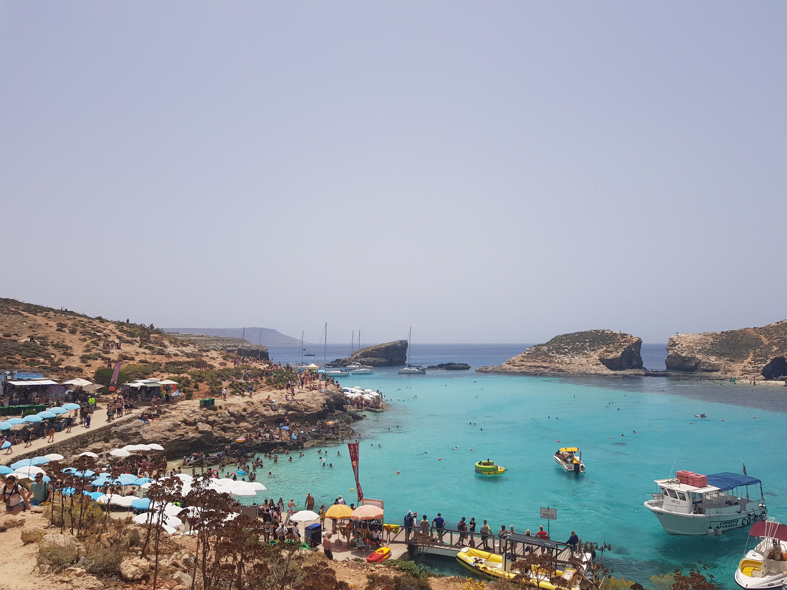
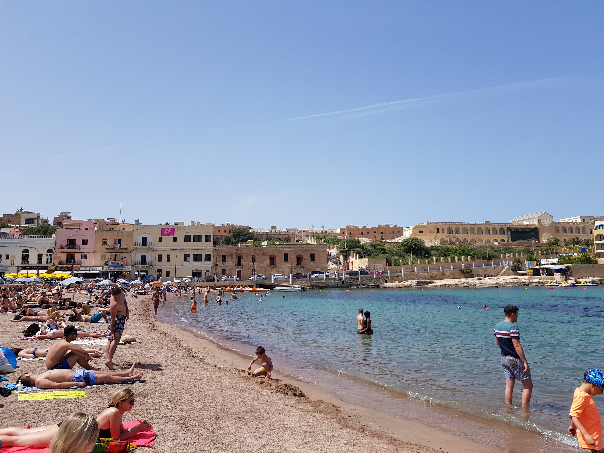

Blue Lagoon
The Blue Lagoon, located at Comino, is one of the most beautiful places in the Maltese islands. Here's how to get there and tips on how to plan your trip.

ST.Julias
St. Julias is a seaside town in Malta. It’s known for beaches like Balluta Bay, a rocky stretch with a promenade and restaurants. Bars and nightclubs line the streets of Paceville, an area south of St. George’s Bay Beach. Spinola Bay has traditional fishing boats, plus Spinola Palace, a baroque mansion with a carved clock centrepiece on its facade. Portomaso Bay is home to a marina and luxury boutiques.